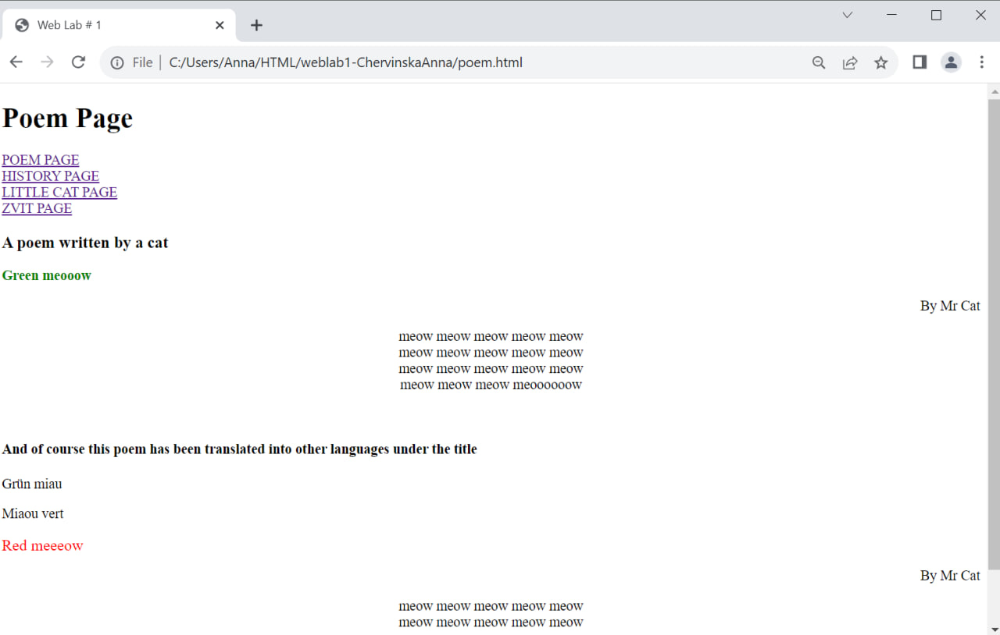
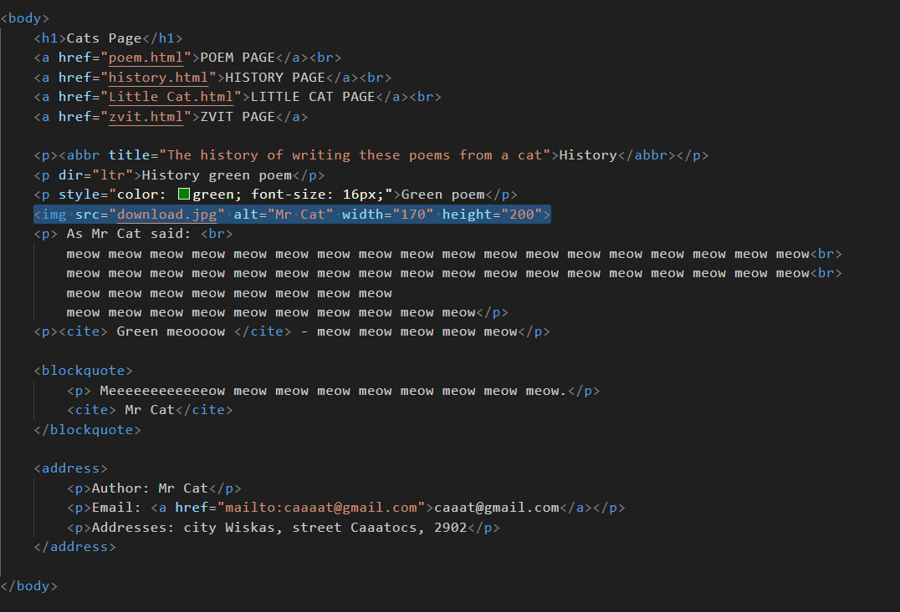
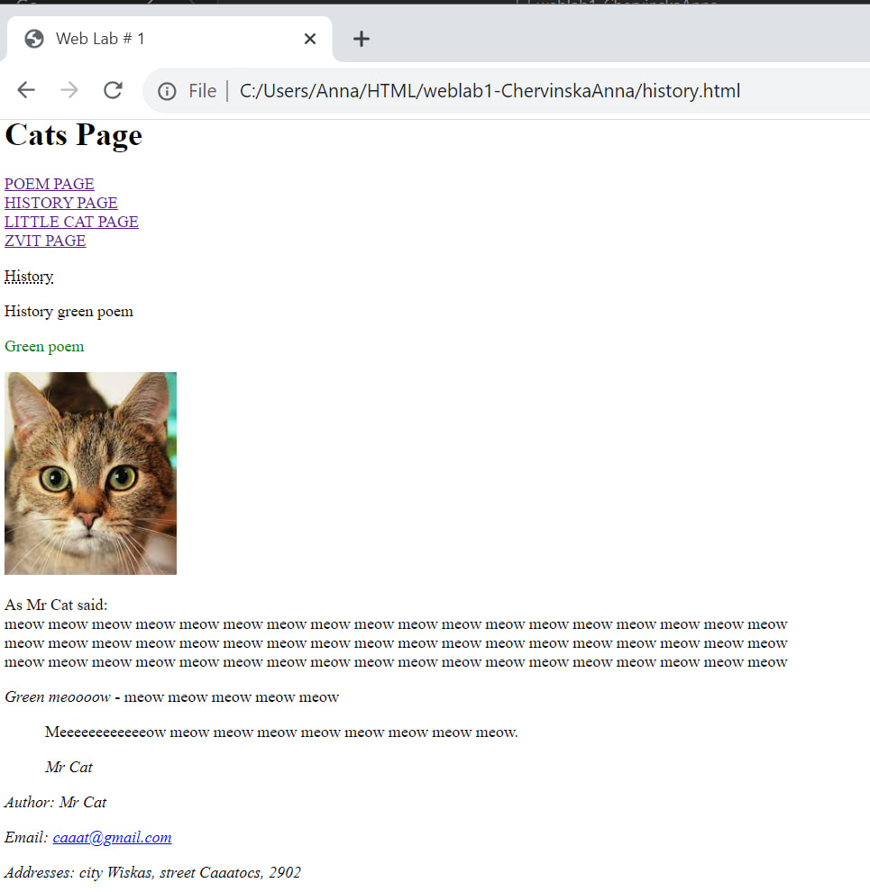
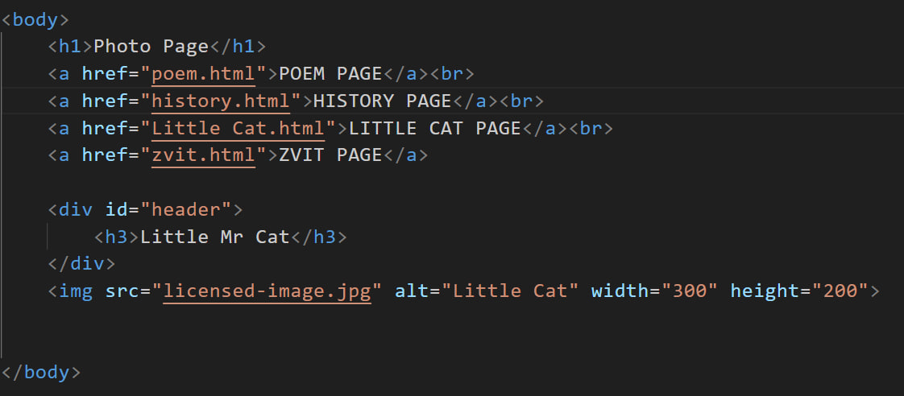
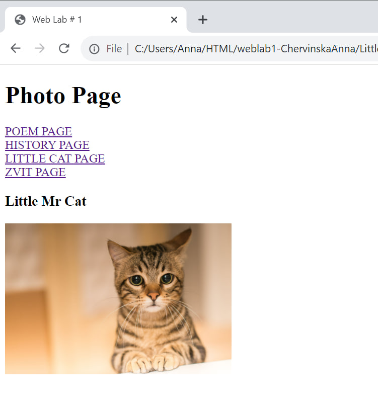

<!DOCTYPE html>
<html lang="en">

<head>
    <meta charset="UTF-8">
    <meta name="viewport" content="width=device-width, initial-scale=1.0">
    <title>Document</title>
    <link rel="stylesheet" type="text/css" href="styles.css">
</head>

<body>
    <div class="fixed-box"> Only for cats!! (and a little for people)</div>
    <div id="header">
        <h1>Звіт</h1>
    </div>
    <a href="secret.html">SECRET PAGE</a><br>
    <a href="history.html">HISTORY PAGE</a><br>
    <a href="documents.html">DOCUMENT PAGE</a><br>
    <a href="zvit.html">ZVIT PAGE</a>
    <p> Лабораторна робота №2<br>
        Тема. Проектування Web-документів. Оформлення – CSS (частина 1).
        Селектори. Правила. Директиви.<br>
        Мета. Оформлення Web-сторінки за допомогою таблиці каскадних стилів (CSS). Селектори. Правила.
        Директиви.<br>
    </p>
    <h3>Варіант-18</h3>
    <p>Розробити файл(и) з таблицею каскадних стилів для сторінок лабораторної робіт №1. При
        необхідності сторінки переробити таким чином щоб на сторінці було декілька рівнів вкладеності
        блокових тегів. <br>
        При розробці таблиць каскадних стилів студент може використовувати будь-які селектори та
        правила CSS, але для кожного студента, згідно варіанту, задається набір бажаних селекторів, правил та їх
        атрибутів і значень, що повинні бути присутні<br>
    </p>
    <p>Селектори, псевдокласи та псевдоелементи:Селектори - тегів, Селектори -ідентифікаторів;<br>
        Селектори - дітей (дочірній), Селектори - контекстний(спадкоємців); <br>
        Селектори - атрибутів:[attr] , Селектори - атрибутів:[attr^=value], <br>
        Селектори - атрибутів:[attr*=value] ; Псевдокласи::first-child, Псевдокласи::enabled, <br>
        Псевдокласи::empty, Псевдокласи::last-of-type, Псевдокласи::lang(language), <br>
        Псевдокласи::lang, Псевдокласи::active ; Псевдоелементи ::first-line, <br>
        Псевдоелементи::before; !important; Границі, заповнювачі и рамки:margin:<розмір>, margin:<процент> , <br>
                margin-left:<розмір>, margin-left:<процент> , margin- top:<розмір>, margin- top:<процент> ; <br>
                                padding:<розмір>, padding-left:<розмір>, padding-bottom:<розмір>; border-width:thin ,
                                            <br>
                                            border-width: <розмір>, border- top-width:thin , border- top-width: <розмір>
                                                    ,<br>
                                                    border-bottomwidth:thin , border-bottom-width: <розмір>;
                                                        border-right-color:<колір>, <br>
                                                            border-leftcolor:<колір>, border- top-color:<колір>;
                                                                    border-bottom-style:none, border-bottom-style: <br>
                                                                    double, border-bottom-style: hidden,
                                                                    border-bottom-style: groove,
                                                                    border-right-style:none, <br>
                                                                    border-right-style: double, border-right-style:
                                                                    hidden, border-right-style: groove,<br>
                                                                    border- topstyle:none, border- top-style: double,
                                                                    border- top-style: hidden, border- top-style:
                                                                    groove; <br>
                                                                    Позиціювання елементiв:display: inline, display:
                                                                    none, display: table-cell, display: inline-table,
                                                                    <br>
                                                                    display: block, display: table-row-group; position:
                                                                    static, position: fixed; z-index: auto; float: left,
                                                                    <br>
                                                                    float: none; clear: none, clear: left; direction:
                                                                    ltr; unicode-bidi: normal, <br>
                                                                    unicode-bidi: bidioverride; Візуалізація
                                                                    елементiв:max-width, width; min-height: <розмір>,
                                                                        min-height: <br>
                                                                        <процент>, max-height: <розмір>, max-height:
                                                                                <процент>; line-height: normal,
                                                                                    line-height: <br>
                                                                                    <розмір>; vertical-align: baseline,
                                                                                        vertical-align: middle,
                                                                                        vertical-align: bottom,
                                                                                        vertical-align: <br>
                                                                                        text-top; overflow: visible,
                                                                                        overflow: scroll; clip: rect(
                                                                                        <top>,<right>,<bottom>,<left>);
                                                                                                        visibility: <br>
                                                                                                        visible,
                                                                                                        visibility:
                                                                                                        hidden; outline,
                                                                                                        outline-width;
                                                                                                        Колір фон:color:
                                                                                                        <колір>;
                                                                                                            background-color:
                                                                                                            <br>
                                                                                                            <колір>;
                                                                                                                background-image:
                                                                                                                <uri>;
                                                                                                                    background-attachment:
                                                                                                                    scroll;
                                                                                                                    background-position:
                                                                                                                    <br>
                                                                                                                    <розмір>
                                                                                                                        {1,2},
                                                                                                                        background-position:
                                                                                                                        bottom,
                                                                                                                        background-position:
                                                                                                                        top;
    </p>
    <h2>Завдання 1</h2>
    <p>Код до завдання</p>
    
    <p>Результат 1</p>
    
    <h2>Завдання 2</h2>
    <p>код до завдання</p>
    
    <p>Результат 2</p>
    
    <h2>Завдання 3</h2>
    <p>код до завдання</p>
    
    <p>Результат 3</p>
    

</html>